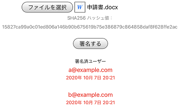

File Stamp は、ファイルの内容に対して承認する印鑑を押すような電子署名を行います。
お使いの PC やスマートフォン（ローカル）にある承認しようとしているファイルを File Stamp サービス内の「ファイルの選択」ボタンで指定し、 「署名する」ボタンを押すことで、 ファイルの内容に対して承認したことになります。
電子署名に記録される署名者は、 署名ボタンを押したときにサインインしているアカウントに 紐づけられているメールアドレスによって識別されます。 同じメールアドレスが複数のアカウントに紐づけられることはできないため、 アカウントが乗っ取られない限り、なりすましは発生しません。
ファイルの内容は、ファイルのハッシュ値（SHA256）で識別されます。 ファイルの内容を一部でも変更するとハッシュ値が異なる値になるため、 別の書類に印鑑を写すようなことはできません。
署名日も記録されます。
電子署名は、クラウド上のデータベースに保存されます。 データベースに書き込む権限は File Stamp サービスのバックエンドだけなので、 File Stamp サービスのバックエンドが定義した処理以外の方法で 書き換えることはできません。
電子署名の内容を参照するには、 署名するときと同様に対象となるファイルを指定するだけです。 電子署名の内容は、ファイルの内容に対して署名した人のメールアドレスの一覧です。 電子署名を確認する対象となるファイルを持っている人だけが参照することができます。

署名者は、承認する印鑑に二重線を付けるように、電子署名を取り消すことができます。 取り消したことはクラウドに保存されます。 一度でも署名したことがあることを削除することはできません。
取り消しの削除（再署名）をすることはできます。
署名日、署名の取り消し日、再署名日のいずれか最も新しい日付のみ記録されます。
何かご質問があれば、下記のフォームに内容を入力して「送信」ボタンを押してください。